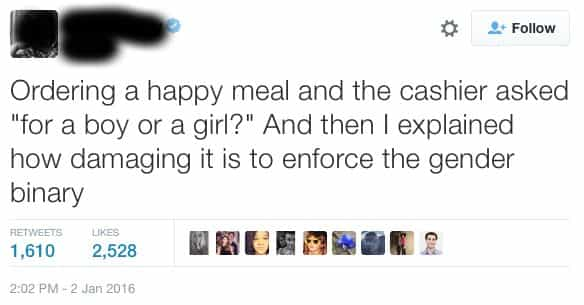
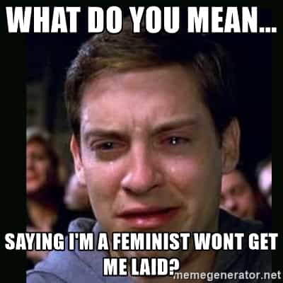

Corey is an iconoclast and the author of 'Man's Fight for Existence'. He believes that the key to life is for men to honour their primal nature. Visit his new website at primalexistence.com


Our society is declining so fast that there seems to be new form of degeneracy popping out every week. In addition to the twenty degenerate cultures I’ve listed in my previous article, here are twenty more that you should be aware of for your enjoyment. Really, we’re living in a special era that will be studied by anthropologists or aliens in the distant future when all this madness leads to its eventual conclusion. So, instead of getting all flustered, try to enjoy the show when you still can.
You don’t realize just how much we worship the electronic screen until you see others do it. How long do you think it’ll be before the screens get permanently attached to our heads or even our irises?
I’m also guilty of internet jockeyism.
The internet has become the safe-space battleground for the plebs to fight amongst one another while the elites are robbing the people blind and destroying nations in the real world. But forget that, let’s go back online to insult someone for having a different opinion!
“Oh, eating this “food” is going to make me fat and give me diabetes? Who cares, it’s delicious.”
“Bored? Life sucks? Oh well, I’ll play video games all day. Screw the real world.”
“Marriage, family, and children? lol, I’m too busy drinking like a whale and riding the cock-carousel.”
Speaking of pleasures, attention is the easiest way to fire dopamines in your brain without having to give up anything (and unlike food or drugs, you can’t crash or wreck yourself). It’s no wonder that attention today is the most highly sought currency in our world of Facebook, Tinder, Instagram, and more.
Being disgusting on purpose to get attention is exactly what they’re aiming for.
The best thing about attention is that it doesn’t have to be positive; it can be won just by being disgusting enough for people to notice. Some people turn it into a game where it is both a weapon and a competition to see how much reaction can be provoked.
You know the civilization is due for the reset button when these skanks are put on television instead of going on the guillotine.
Serious question: Why do people even worship celebrities? What do they even get out of it? Are the stars supposed to be surrogate gods and heroes in a world without any? Are people today so stupid and inane that they have to look up to entertainers to feel good about their own worthless lives?
Judging by his reaction, he appears to have just accomplished something profoundly valuable for the advancement of his own life.
No one wants to accomplish anything for themselves anymore. People are spending more and more time watching movies, sports, porn, television shows, news, and so on so that they can go on the internet and talk about them as if they’re actually important.
We all know that life’s only purpose is to make money and get rich. If you don’t like that, you’re just a loser who can’t make it. Now, click this link within the next ten seconds to learn my secret on how to make money FAST—but you first have to buy my books and products that show you how awesome my life is.
“Oh, boohoo, you don’t know how hard it is to be a [woman, black, homosexual, Jew, Muslim, trans-whatever, etc.]. Now give me your tears and cash you oppressor scum.”
Men are becoming increasingly domesticated in a world that tries to subjugate and exploit them. The white-knights and male feminist chihuahuas among them will bark at you and defend the man-hating feminist pukes just because they have a vagina. I wonder if these rag dolls even realize that the “misogynists” they hate are having sex with the women they’re defending while they themselves are getting nothing for picking up the tap and throwing themselves down as doormats.
Why make any effort in the world to be decent when the society itself isn’t? When you see someone who just seems to have lost any and all sense of shame, it’s their way of saying, “I don’t care about anything. I have no control over my life.” This is what happens to a dying civilization with no values and no standards.
This is what Freud calls the slip of the unconscious.
Reaction formation is a way of covering your true nature by behaving the opposite way. It shouldn’t be a surprise for us to find out that there are many feminists who secretly crave being dominated and have fantasies about getting raped. I’m also certain that most male feminists are secretly perverts or closet rapists. The MGTOW’s do their part too by screaming about how they don’t care about women via bitching about them non-stop.
Wishful fantasy gone too far or an unbelievable lie for attention whoring?
As I’ve said in my previous article, being recognized as a victim is a privileged honor. It is so precious that people will go as far as to fake it by lying and committing hate crimes against themselves to achieve it.

How dedicated you are to social justice is directly co-related to how little self-worth and discipline you possess. In other words, the less accomplished you are and the less self-control you have over yourself, the more you need to compensate by being an “activist” and the more you need to control other people’s behaviors to relieve your anxiety.
Give-up-itis is a disease that comes in several forms:
“I’m so used to getting everything from my parents and the government, don’t make me make an effort in life!”
“If I talk to women I’ll automatically get divorced and go to jail for rape, so I’m going to bitch at other men who are more successful.”
“People should just accept me for the fat and disgusting pigturd that I am, I don’t live my life to please anyone except my stomach and my taste buds!”
“Hey, look! Someone has a political opinion we don’t like, let’s ruin his life!”
“It’s okay, no one’s forcing us.”
More technology means less freedom. Every new invention will become normalized and you’ll be forced to choose between “getting on with the times” or cutting yourself off from the society. I can’t wait for the sheeple to start telling everyone who resists that we can “moderate” or choose not to use technology when they become requirements for jobs, communication, and basic social function. They’re already trying to ban cash and are employing surveillance in every technological device we use, where are we supposed to run away to?

I think virtue signaling is a side-effect of today’s education that is more interested in spreading degeneracy than actually teaching the youth something useful. The kids who were trained to be “good” for listening to the teachers are now adults doing the same thing to get praise from the society. The people who engage in these shenanigans want to get the figurative pat on the head for expressing opinions that the current culture tells them to have. It’s also a form of attention-whoring for those with low self-esteem.
“Look how progressive I am! Isn’t it hip that I hate my race so much?”
It’s now not enough to just feel guilty about your own identity (ie. cis-gender, white, male) while propping up the “oppressed” group, you must now show off how enlightened you are by actively hating your own identity for the public to see.
Guess which societies of the past indoctrinated children for ideological battles?
In a dangerously bigoted world like today, children need to be brainwashed educated from a young age to become the foot-soldiers for social justice lest they grow up and start to think for themselves.

Degeneracy doesn’t just stop on its own; the rot will continue on because it can. And whatever you may hope for, there has never been an instance where social degeneracy was reversed by a counter current without vehement force or a full collapse. Know that the societal decay of today cannot last much longer—you must brace yourselves for what is to come.
 If you like this article and are concerned about the future of the Western world, check out Roosh's book Free Speech Isn't Free. It gives an inside look to how the globalist establishment is attempting to marginalize masculine men with a leftist agenda that promotes censorship, feminism, and sterility. It also shares key knowledge and tools that you can use to defend yourself against social justice attacks. Click here to learn more about the book. Your support will help maintain our operation.
If you like this article and are concerned about the future of the Western world, check out Roosh's book Free Speech Isn't Free. It gives an inside look to how the globalist establishment is attempting to marginalize masculine men with a leftist agenda that promotes censorship, feminism, and sterility. It also shares key knowledge and tools that you can use to defend yourself against social justice attacks. Click here to learn more about the book. Your support will help maintain our operation.
Read More: 20 Degenerate “Cultures” That Have Formed The Dystopia We’re Living In